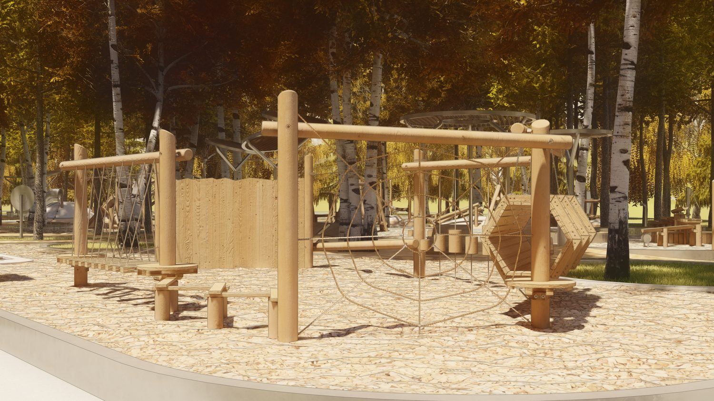
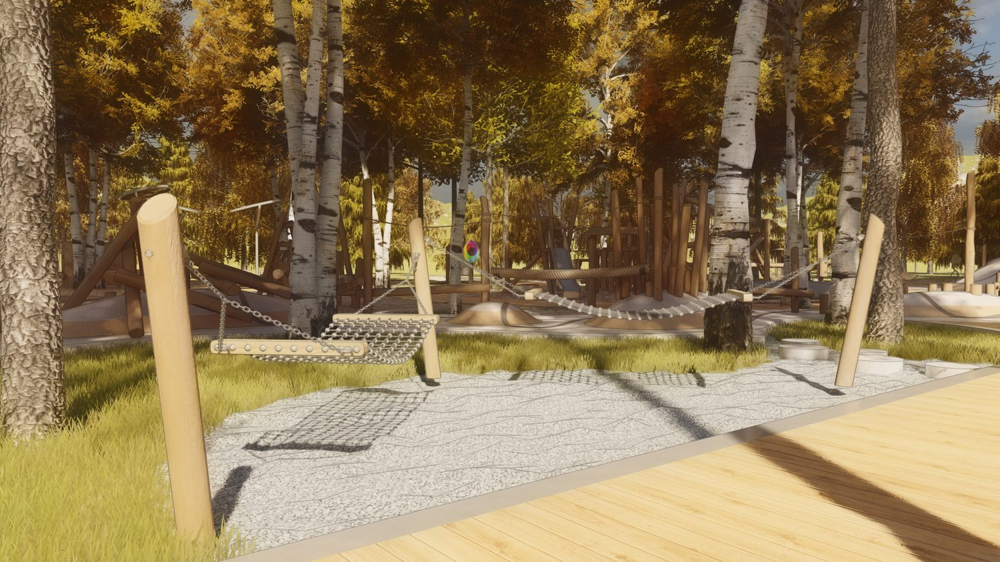
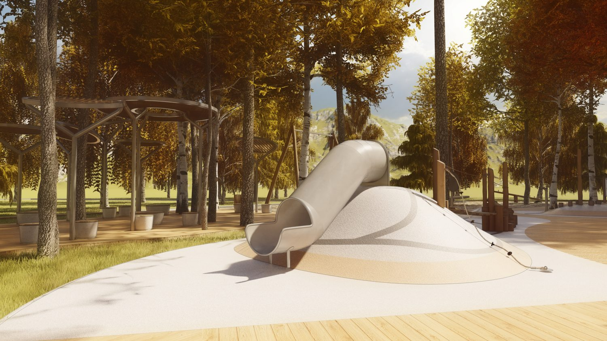
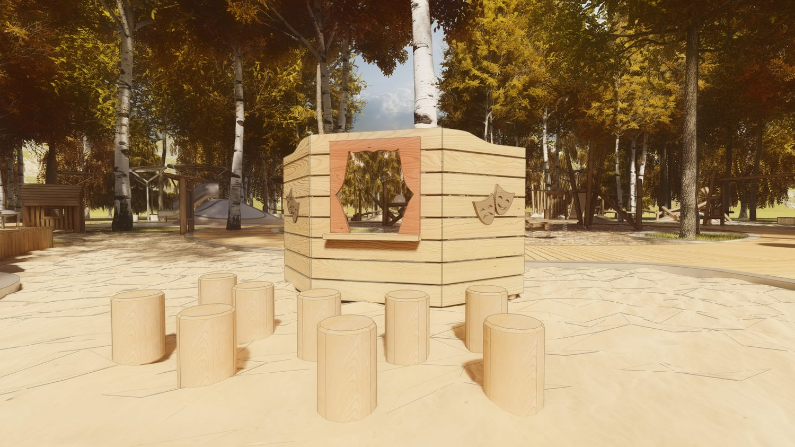

Экологический подход — основа площадки
Игровое пространство строится из природных материалов: дерево, песок, щепа. Покрытие пропускает воду и дышит. Существующие деревья сохраняются, а планировка следует за рельефом — не наоборот. Безбарьерная среда: пологие заезды для колясок и доступ для всех.
Дерево как основа
Конструкции из натурального дерева в природной палитре цветов.
Природное покрытие
Щепа, песок и помосты — без сплошной резины. Покрытие дышит и пропускает воду.
Сохранение деревьев
Площадка строится вокруг существующих деревьев — корни не повреждаются.
Безбарьерная среда
Пологие заезды для колясок, ровные подходы, инклюзивные игровые элементы.

Природное игровое пространство
Площадка построена вокруг деревьев, а не поверх них. Активные и спокойные игры, разные возрасты, открытая планировка.

Для школьников и подростков
Канатные модули, лазалки и башни из дерева для активных игр и тренировки координации.

Тихая зона и отдых
Гамаки среди деревьев, природное песчаное покрытие, мягкие переходы и сенсорные элементы.

Для самых маленьких
Горка-холм, песок, навес от солнца — мягкие материалы и масштаб, понятный детям дошкольного возраста.

Кукольный театр
Сцена для детских спектаклей и культурной программы — мостик к программе семейных событий парка.
За основу взят реализованный проект бюро «Тайга» в парке Маяковского, Екатеринбург, — как ориентир уровня и подхода.